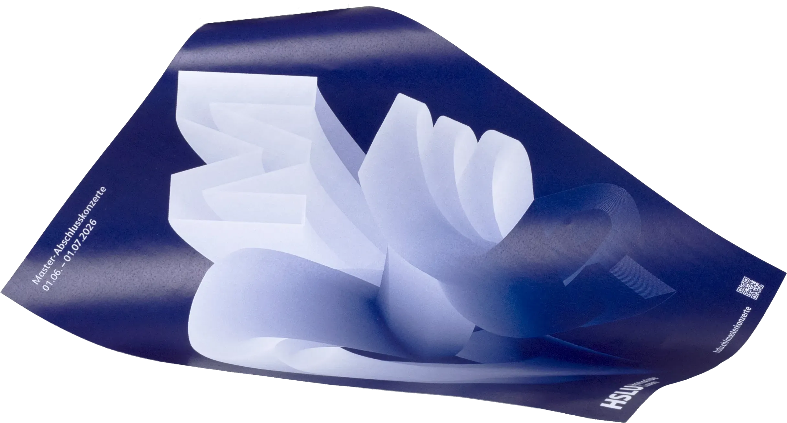

EIN MOMENT, DER BLEIBT
Diese Arbeit entstand im Rahmen der Master-Abschlusskonzerte der Hochschule Luzern – Musik. Dabei habe ich mich mit dem Thema Nachklang beschäftigt. Denn ein Ton endet nicht einfach abrupt, sondern klingt aus und verbindet sich mit dem nächsten. Dieses Prinzip habe ich in der Gestaltung aufgenommen. Die Buchstaben stehen nicht isoliert, sondern sind miteinander verbunden. Manche klar erkennbar, andere nur noch als Spur. Nachklang beschreibt jedoch nicht nur ein akustisches Phänomen, denn auch ein Abschluss hinterlässt Spuren: Er hat kein plötzliches Ende, sondern klingt ab und bleibt als Erinnerung spürbar.
